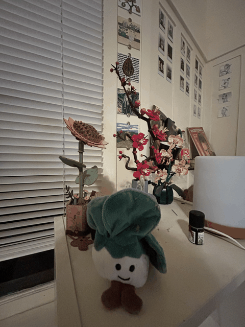

Question 1 · The Selfie
Question 2 · Architectural Perspective Compression
Question 3 · The Dolly Zoom

CS180 · Intro to Computer Vision & Computational Photography · UC Berkeley
Becoming friends with your camera · shot on iPhone 14
